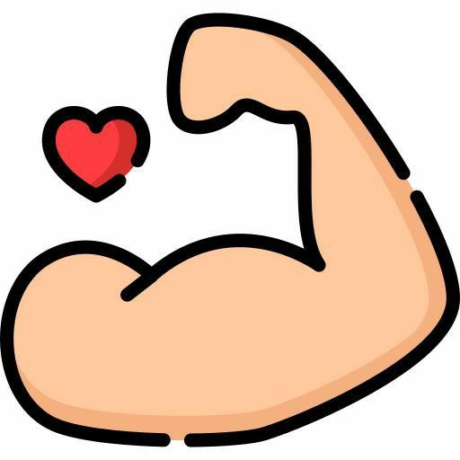
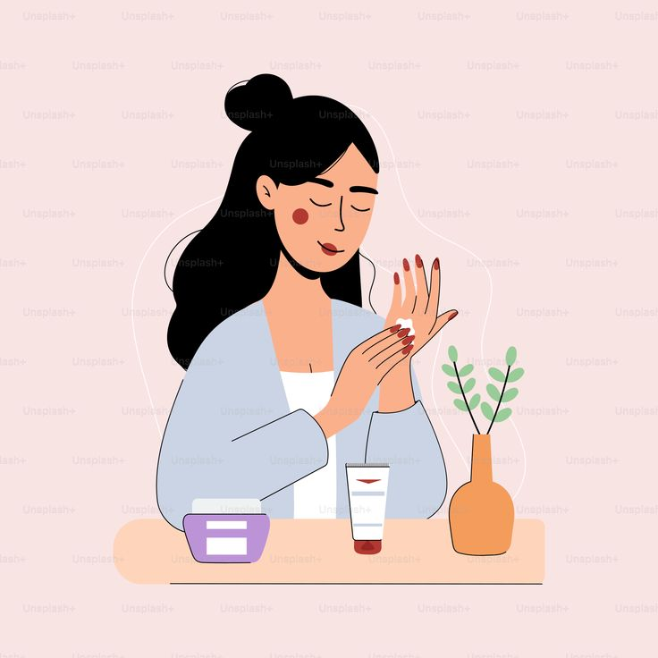

Manfaat Gizi untuk Kesehatan Tubuh
Jelajahi berbagai manfaat nutrisi seimbang yang esensial untuk mendukung fungsi tubuh dan meningkatkan kualitas hidup Anda secara keseluruhan.

Meningkatkan Energi
Asupan gizi yang tepat memberikan energi harian, membantu melawan kelelahan, dan meningkatkan produktivitas.

Memperkuat Sistem Kekebalan
Vitamin dan mineral seperti vitamin C dan zinc membantu tubuh melawan penyakit.

Mendukung Kesehatan Tulang
Kalsium dan vitamin D dari gizi seimbang mencegah osteoporosis dan menjaga kekuatan tulang.

Meningkatkan Fungsi Otak
Lemak omega-3 dan antioksidan mendukung memori dan konsentrasi.

Menjaga Berat Badan Ideal
Gizi seimbang membantu metabolisme, mengurangi risiko obesitas dan penyakit terkait.

Memperbaiki Kulit dan Rambut
Protein dan vitamin A membuat kulit sehat dan rambut berkilau.